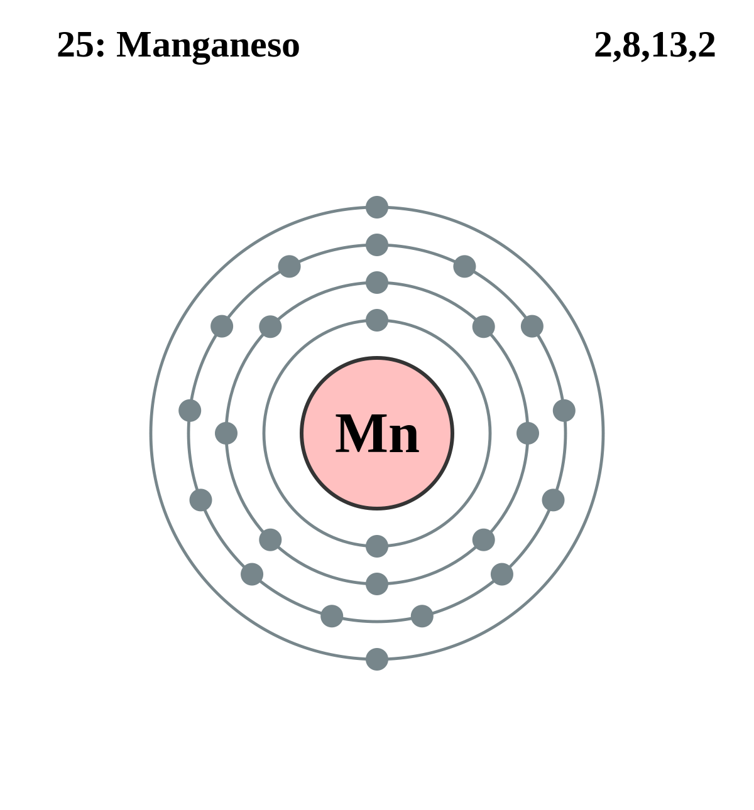

|
|
||
|
MANGANESO El manganeso, aislado en 1774, es de color blanco grisáceo, más duro que el hierro y muy frágil. Es reactivo químicamente y se utiliza para formar importantes aleaciones ferromagnéticas y de otros tipos. El manganeso mejora la manipulación del acero y le añade fuerza, rigidez, resistencia ante el desgaste y dureza. El manganeso puro existe en cuatro formas alotrópicas. Los minerales de manganeso, como los óxidos, silicatos y carbonatos, son frecuentes. Actualmente, el manganeso se obtiene a partir de menas y minerales como la pirolusita y la rodocrosita. |
 |
DATOS Número Atómico: 25 Peso Atómico: 54.94 Electronegatividad: 1.55 Configuración Electrónica: [Ar] 3d⁵ 4s² Estados de Oxidación: +2,3,4,6,7 No. de Electrones de Valencia: 7 |